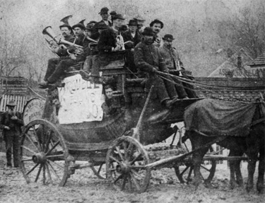
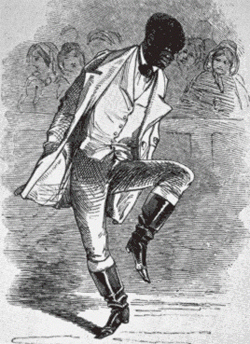
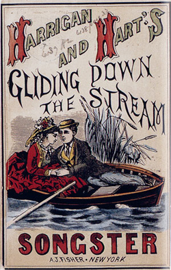
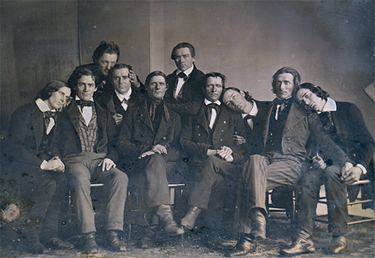

|
The distinction between popular or folk music and classical music seems easy to
make today, but this was not necessarily so in the late eighteenth and early
nineteenth centuries. These two stylistic traditions gradually began to separate
in the 1820s or 1830s, a process that continued throughout the century. Before
this, 'popular music' referred to the music that was known by the most people
and sold the most copies. Waltzes, polkas, marches, hymns, ballads, Italian
operas, and English drinking songs all constituted popular music in the early
nineteenth century. Singers might follow an aria from an Italian opera with
"Yankee Doodle" during their performances, to the great joy of the crowd.
The term 'folk music' is typically associated with the music of the common
people of an ethnic or racial tradition, such as an Irish ballad or slave
spiritual. Despite this, it is very difficult to separate pure ethnic strands
within early American music, because upon their arrival to the new nation people
began to share, borrow, adopt and adapt. There is usually no known composer of
folk music, either due to the age of the piece or its assumed ownership by the
|

A civilian brass band en route to a performance.
|
group. Despite the distinction between the two terms, folk songs were at times
popular music and vice versa.
In general, nineteenth century folk and popular music were performed in
public, by both professionals and amateurs, for an audience. People played, sang
and danced to make money, for worship, while they worked, as a way to socialize,
and just for fun. Music was created in the street, the home, and the worksite,
as well as in venues constructed specifically for performances. Popular and folk
music in the early nineteenth century included a wide diversity of songs,
styles, dances, and instruments.
Prior to the twentieth century, bands played an essential role in wars. They
were used to communicate orders, to set the marching pace, and to keep up
morale. The public would often turn out for their training exercises, which were
sometimes followed by picnics. After independence, former military musicians
formed the core around which community civilian bands grew. These bands
typically held public performance to celebrate anniversaries of national
importance--among them Washington's Birthday, the Fourth of July, and Jackson's
victory at the Battle of New Orleans--and would also play at social events such
as dances and parades. Their usual instrumentation included drums, fifes and
brass. By mid-century, there were about 60,000 band members playing in 3,000
bands throughout the United States.
As popular as band performances were, however, they could only be enjoyed on
an occasional basis. And since there was no recording technology before the
Civil War, the only way that most people could have music in their daily lives
was to create it themselves. So, Americans often sang while they labored. Slaves
worked to music, both of their own accord and at their master's urging. Sailors,
riverboat men, lumberjacks, and others whose tasks required cooperative movement
created songs specific to their trade. Those who worked on the water were a
particularly cosmopolitan group, and musical exchanges between Irish, German,
French, English, American, Black, and Caribbean boatmen was common. Street
vendors hawking their goods in cities and towns often created songs to advertise
their wares. These rhyming musical sales-pitches served both the purpose of the
modern jingle and the advertising billboard. Their customers could literally
hear them coming.
Slave music combined elements of African, European, American, and Caribbean
musical cultures. Not surprisingly, African elements were most prominent. Some
slave folk music traditions of African origin include the banjo, improvisation,
call and response--a method of singing where a leader would sing a phrase and the
group would echo a refrain as a chorus--and patting juba. Patting juba describes
a technique that involves slapping various body parts to provide the rhythm to
songs and dances. It was very popular among the slaves, in part because it
|

Traveling performer William Henry Lane was so well known for
his skill at patting juba that his nickname was "Pattin' Juba."
|
required no training or practice, and in part because it allowed them to
circumvent masters' prohibitions against slaves using drums, a product of the
fear that they might use drum beats to communicate an escape or rebellion.
Slave funerals, weddings, holiday celebrations, and work projects typically
included songs and, when apropos, dancing. Some masters allowed Saturday night
dances, where slaves could gather to socialize and dance to popular fiddle and
banjo songs. Slave musicians often performed at dances held on plantations, and
could at times earn money for themselves playing at white peoples' social
functions. Particularly talented slave musicians could gain increased freedom of
movement when requested to play at sites away from their homes, and as such,
slave musicians were particularly likely to succeed in escape attempts.
The music of immigrants in the nineteenth century was often performed
spontaneously, and orally, with no written records left behind. Historians,
then, are left only with the small minority of immigrant songs that found their
way into print. A few generalizations can be made, however. The majority of
immigrants in the years before the Civil War came from the British Isles, and
their musical tastes were well represented, as were those of German immigrants.
As with slaves, the musical culture of the homeland was a critical influence on
immigrants, though life in America led to the development of uniquely American
forms.
Social dancing was popular among immigrants, who gathered in homes, inns,
taverns and any other place large enough to host their festivities. For these
events, furniture would be cleared, and families might come from miles around to
socialize and dance. Some dance styles required training and extensive practice.
In this category were cotillions, a type of English country dance, and
quadrilles, which were group dances of French origin. Other styles of dance were
more accessible and easier to perform, among them jigs, hornpipes, polkas, and
reels. In the 1820s, the waltz made its way from Europe to the United States.
Thought by some to be sexually promiscuous, the waltz required couples to remain
in physical contact throughout the piece, a departure from previous styles. The
waltz did not supplant older dance forms, but did diversify immigrant dance even
further.
The music for these dances typically included several fiddles, sometimes
accompanied by banjos, clarinets, or flutes. The preeminence of the
fiddle--inexpensive, easily portable, danceable, and the most widely used
instrument in America at this time--reflects the influence of Irish immigrants.
|

A popular American songster from the 1860s.
|
The German influence on early American music was strong as well. Their
liederkranz and mannerchor popped up in every city with a substantial German
immigrant population beginning in the 1830s. These male singing societies
performed both folk and classical music, and also had a social component that
kept the immigrants connected to their culture in the new environment. A
substantial number of German immigrants also served as the musicians for theater
and opera companies in large American cities.
In the eighteenth century, most music was performed in taverns, inns, and
homes. Over the course of the nineteenth century, more and more venues were
constructed to hold musical performances. This included dance halls, theaters,
ballrooms, and opera houses. The crowds at these public venues were often active
participants in musical performances, and it was not uncommon for a singer to be
forced to perform a popular patriotic song over and over again by the boisterous
and vocal audience.
One could purchase this popular music in a variety of forms. Broadsides and
songsters were cheap and readily available from street vendors or in general
stores. They had lyrics that could be sung to a popular tune, although they did
not include the actual music. The words could be satirical, political, comic, or
religious in nature. It was also quite common for new lyrics to well known songs
to be printed in newspapers, especially when commemorating a current or
historical event.
The antebellum years witnessed a rise in musical literacy, as pianos and
melodeons became more affordable, and as public schools began to teach music,
beginning with Boston's schools in 1836. As a consequence, sheet music--which,
unlike songsters, included both lyrics and music--became increasingly popular. A
common evening pastime for families was to host sing-alongs for friends in their
parlors, with piano accompaniment. One of the most popular song types for this
situation was the sentimental ballad, which focused on themes of lost love,
sorrow, and death. Longing for a time past or for people gone might bring a tear
to the audience's eye; this was a common goal and welcome achievement for
songwriters. Stephen Foster was a master of this genre. He was the first
American composer to make a living writing music for private consumption; among
his hits were "Old Folks at Home" (1851), "My Old Kentucky Home" (1853), and
"Jeanie with the Light Brown Hair" (1854). In addition to sentimental ballads,
comic songs from minstrel shows, hymns, and patriotic tunes were also popular as
parlor music.
For many centuries, it was a common European folk tradition to perform in
such a mask, in order to signify the portrayal of an "other." In the United
States, this tradition was borrowed and transformed by Thomas Rice, and the end
result was an immensely popular caricature of African Americans called
minstrelsy. During these shows, white men would blacken their faces with cork
and perform skits, musical numbers, and dances. These performances exaggerated
stereotypes and physical attributes of free blacks and slaves, and would be
considered extremely racist by modern standards. Slaves were portrayed as lazy,
jolly, and musical, while free blacks were depicted as stupid and highly sexual.
The typical instrumentation for these shows was banjo, fiddle, tambourine,
and bones. Bones, an instrument rarely used today, refers to a pair of bones or
small wooden boards that were struck together to make a drumlike sound. Given
the appeal of the shows, and the central place of music within them, they had an
enormous influence on American popular music. In addition to his sentimental
ballads, Stephen Foster wrote many popular minstrel tunes. So too did E.P.
|

Members of the Hutchinson Family, antebellum
America's most popular singing troupe, photographed in 1845.
|
Christy, the leader of popular minstrel troupe Christy's Minstrels. Music
publishers published minstrel songs in books called Ethiopian songsters; these
compilations were enormously popular in the 1840s and 1850s. Among the hits of
this genre were "Old Dan Tucker" (1843), "Mary Blane" (1844), "Oh! Susanna "
(1848), "Nelly was a Lady" (1849), "Dixie" (1859), and "Zip Coon" (1861).
Professional European musicians frequently toured the United States in the
late antebellum period, and were generally received by large, enthusiastic
crowds. In 1850, when opera singer Jenny Lind toured the U.S., she set off a
mania not unlike a modern rock star. Tickets were auctioned off for hundreds of
dollars, women wore their hair like her, shops sold Jenny Lind hats, and the
sheet music industry made a fortune publishing songs she had sung. Norwegian
violinist Ole Bull, Irish-born songstress Catherine Hayes, and Austrian dancer
Fanny Elssler all found adoring audiences on their American tours as well.
American performers toured the same circuit as the European stars, often
traveling from the east coast cities westward via interior waterways. During the
1830s, the Chapman Family pioneered the art of touring, floating down the Ohio
and Mississippi River on their stage boat and stopping to perform in towns along
the way. Later, with the expansion of steamboat travel, theater companies,
circuses, and minstrel shows--all of them with musical entertainment as part of
their shows--followed the Chapman Family's lead. So too did other "family" acts,
most notably the Hutchinson Family Singers. Their appeal was due, in part, to
their reputation as a respectable middle-class family, which stood in contrast
to the supposedly questionable character of some touring performers. The
Hutchinson Family Singers frequently included morally uplifting messages in
their performances, and regularly delved into politics, expressing their support
for abolitionism, temperance, and women's rights. Their style was described as
simple, sweet, and natural. They were popular among those who might find the
minstrel shows vulgar and distasteful.
In the 1860s, the Civil War had a distinct impact on Americans' musical life.
The popularity of patriotic songs in both the North and the South increased
dramatically, while sentimental ballads retained their appeal. After the war,
there continued to be a strong European influence on the music performed in
America, but American-born composers and performers increasingly took center
stage. The styles that would later define American music--among them jazz, the
blues, and rock n' roll--emerged from the variety of musical cultures that had
come together in the early republic and antebellum America.
Source: Christopher Bates, ed. The Encyclopedia of the Early
Republic and Antebellum America (Armonk, NY: M.E. Sharpe, 2010), 690-694.
|